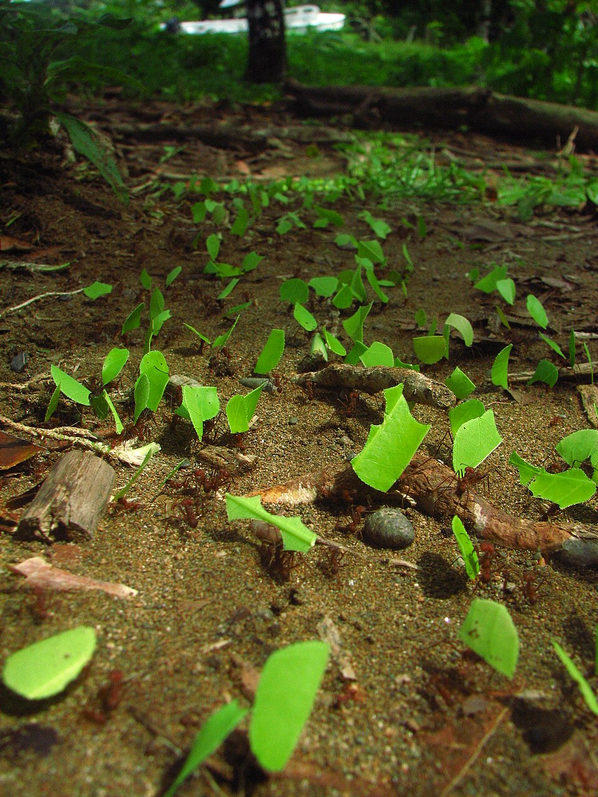

AI × SWARM
CHAPTER 02 · 자연의 군집 지능
∞
NATURE'S BLUEPRINT개미·벌·새·물고기의 답
자연은 이미 군집을
수억 년째 씁니다.

잎꾼개미 · 페로몬으로 길을 만든다 · Wikimedia

찌르레기떼 · Wikimedia
벌집 · Wikimedia
한 마리만 보면 아무것도 아닙니다. 그런데 떼가 되면 — 공항을 짓고, 포식자를 따돌리고, 길을 찾아냅니다.
개미 · ANTS
페로몬으로 통신. 좋은 길에 더 많이 묻혀 — 최단경로가 자연히 떠오릅니다.
벌 · BEES
8자 춤으로 꽃의 위치를 알립니다. 각도·시간이 지도가 됩니다.
새·물고기 · FLOCK·SCHOOL
옆을 따라 움직일 뿐인데 — 떼 전체가 한 몸처럼 회피합니다.
공통점 · THE TRICK
중앙 지휘자는 없습니다. 단순한 규칙 + 이웃과의 상호작용 — 그게 전부입니다.
03 / 10